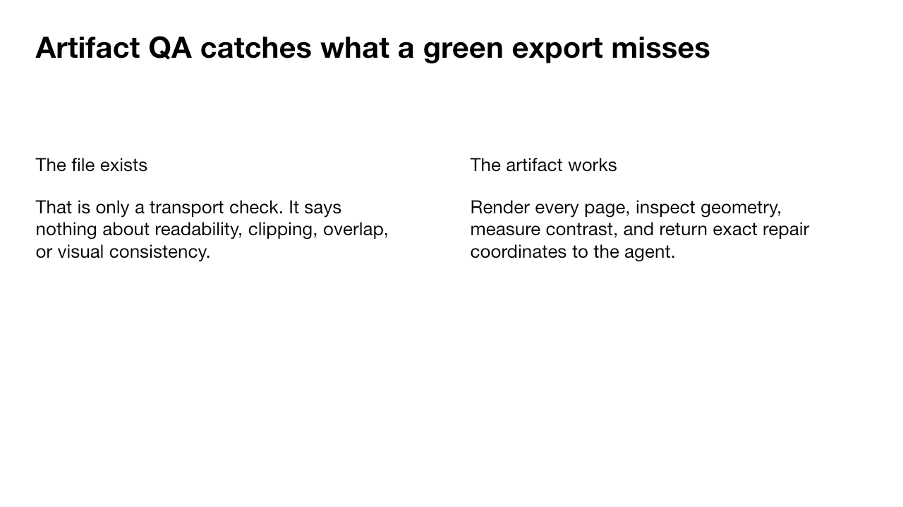
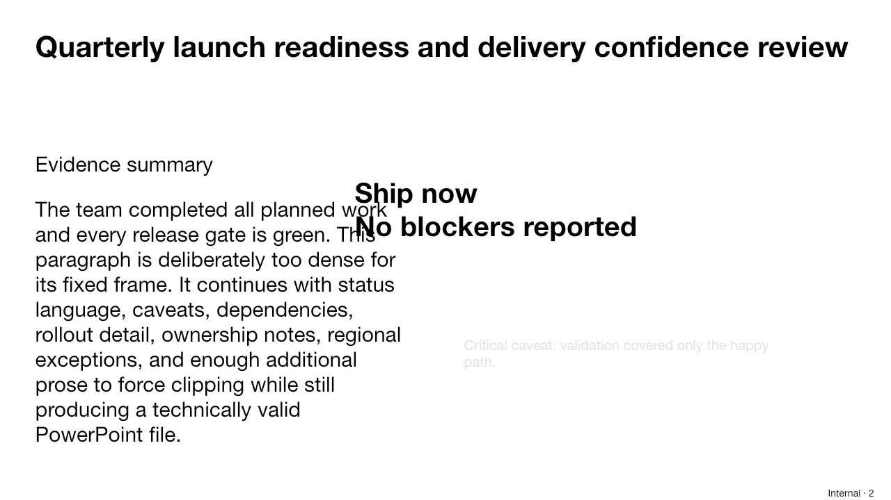

SLIDE 1PASS · 0 findings
Artifact QA catches what a green export misses
No deterministic geometry, fit, or contrast defects found.
Every page is rendered and inspected for geometry, text fit, and readable contrast. Findings return exact object names and repair targets to the generating agent.
4 DEFECTS · 2 SLIDES · FAIL
SLIDE 1No deterministic geometry, fit, or contrast defects found.

SLIDE 2clipped-copy
12 rendered lines need ≈424px inside a 132px frame.
REPAIR → Increase clipped-copy height to at least 424px, shorten the copy, or enable measured fitting.low-contrast-note
#E4E4E4 on #FFFFFF has 1.27:1 contrast; body text needs 4.5:1.
REPAIR → Darken low-contrast-note text to a color meeting WCAG AA against #FFFFFF.off-canvas-footer
Frame [1180, 696, 140, 36] exceeds the 1280×720 canvas.
REPAIR → Move or resize off-canvas-footer so right ≤ 1280 and bottom ≤ 720.clipped-copy ↔ overlapping-callout
Text frames overlap by 13% of the smaller frame.
REPAIR → Separate clipped-copy and overlapping-callout; preserve at least 24px between narrative regions.